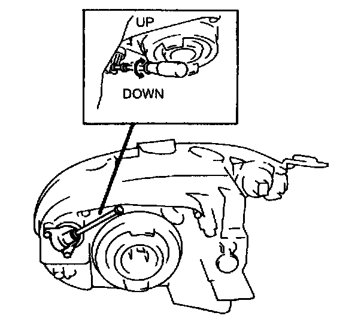

Headlamp: Adjustments
HEADLIGHT ADJUSTMENT
1. Adjust the tire air pressure to the specification.
2. Position the unloaded vehicle on a flat, level surface.
3. Seat one person in the driver's seat.
4. Position the vehicle straight ahead and perpendicularly to a wall.
5. Set the headlights 7.6 m (25 ft) from the wall.
6. While adjusting one headlight, disconnect the connector of the other.
7. Adjust the headlights by turning the adjusting screws as shown in the figure. Loosen the screws first, then tighten them.
NOTE: If the adjusting screws are tightened first, then loosened, they will continue to loosen when the vehicle is in motion and may cause the headlights to become misaligned.